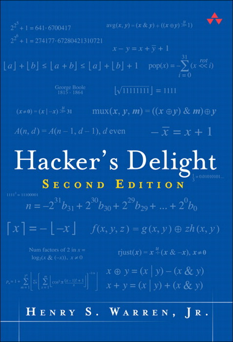
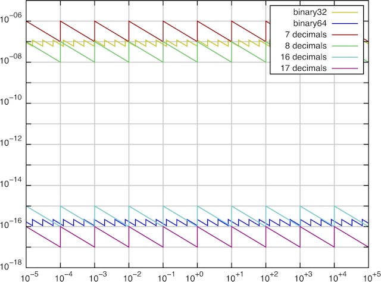
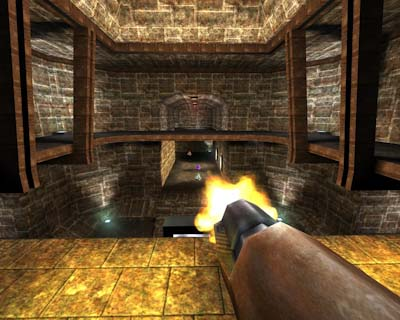
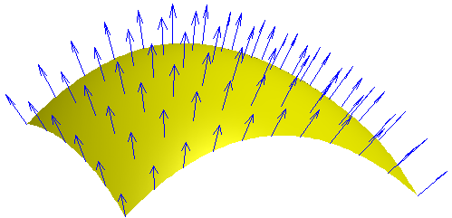

public: True class: center, middle # 数据的机器级表示 蒋炎岩 <jyy@nju.edu.cn> 南京大学计算机软件研究所 --- # 概述 数据的机器级表示复习 * 整数：位运算 * 扩展知识：Undefined Behavior * IEEE754 浮点数 --- class: center, middle # 整数：神奇的位运算 --- # 为什么会有位运算？ 在我们看来，一个`int`类型是物理世界中..., -1, 0, 1, 2, …的表示 但计算机世界，整数其实是用.red[固定长度的01字符串]表示的 (回顾数字电路课)，01字符串天生支持以下操作： * `&` (与), `|` (或), `~` (非) * `^` (异或) * `<<` (左移位), `>>` (右移位) ---- 习题：.red[用上述位运算和常数实现4位整数的加法]运算 * 提示：使用数字电路中的知识 * 有加法就可以实现乘法、分支(`cond ? a : b`)、除法…… --- # 把整数看作01字符串 `(uint32_t)142857` → `0000 0000 0000 0010 0010 1110 0000 1001` 一个整数就可以看成是<math>\{0,1,2,\ldots,31\}</math>的一个.red[子集] <math>S</math> ------ 一个整数操作可以并行对其中的所有01比特操作 - C++中有`bitset<size>`，性能非常可观 ---- C++中有`bitset<size>`，性能非常可观 * 测试是否<math>x\in S</math>：`(S >> x) & 1` * 求<math>S' = S\cup\{x\}</math>：`S | (1 << x)` * .red[习题]：求<math>|S|,S_1 \cup S_2, S_1 \cap S_2, S_1 \setminus S_2</math> * .red[习题]：遍历<math>S</math>中的所有元素 --- # 返回<math>S\ne\varnothing</math>中的某个元素 有二进制数`x = 0b+++++100`，我们希望得到最后那个`100` 想法：造出一些数字，能把`+++++`的部分给抵消掉： | 表达式 | 结果 | | ------ | ------------ | | `x` | `0b+++++100` | | `x-1` | `0b+++++011` | | `~x` | `0b-----011` | | `~x+1` | `0b-----100` | -- count: false ---- 一些有趣的式子： * `x & (x-1)` → `0b+++++000`；`x ^ (x-1)` → `0b00000111` * `x & (~x+1)` → `0b00000100` (lowbit ⭐️) * `x & -x`, `(~x & (x-1)) + 1`都是等价的 --- # 01串：单指令多数据 01向量点积(用于01矩阵乘法)： * `__builtin_popcount(a & b)`；popcount：求<math>|S|</math> ```c int popcount(uint32_t S) { int n = 0; for (; S; n++) { S = S & (S-1); } return n; } int popcount1(uint32_t S) { // SIMD S = (S & 0x55555555) + ((S >> 1) & 0x55555555); S = (S & 0x33333333) + ((S >> 2) & 0x33333333); S = (S & 0x0F0F0F0F) + ((S >> 4) & 0x0F0F0F0F); S = (S & 0x00FF00FF) + ((S >> 8) & 0x00FF00FF); S = (S & 0x0000FFFF) + ((S >> 16) & 0x0000FFFF); return S; } ``` --- # 01串：单指令多数据 一个32位整数可以存储16个0..2的数字`a0, a1, ... a15` 我们希望计算： .center[`(a0 \* b0) mod 3, (a1 \* b1) mod 3, ... (a15 \* b15) mod 3`] 结果同样保存在一个32位整数中 ---- 提示：`(a * b) mod 3 = ((ah * 2 * b) + (al * b)) mod 3` 接下来是.red[数字电路]课的内容 --- # 一本好书  > Henry S. Warren, Jr. *Hacker's Delight* (2ed), Addison-Wesley, 2012. 让你理解写出更快的代码并不是“瞎猜”，而是有方法可循的 - 主要内容是各种神奇优化 - 官方网站：[hackersdelight.org](http://hackersdelight.org/) - 见识一下真正的“奇技淫巧”，以及课堂上讲的都是辣🐔 --- class: center, middle # ☢️ Undefined Behavior ☢️ --- # Undefined Behavior > *Undefined behavior* (UB) is the result of executing computer code whose behavior is not prescribed by the language specification to which the code adheres, for the current state of the program. This happens when the translator of the source code makes certain assumptions, but these assumptions are not satisfied during execution. -- Wikipedia C对UB的行为是不做任何约束的，把<font color="red">电脑炸了</font>都行： > *Allowing the compiler to do anything it chooses, even "to make demons fly out of your nose"*. 常见的UB：非法内存访问 (空指针解引用、数组越界、写只读内存等)、被零除、有符号整数溢出、函数没有返回值……(中🔫) * 通常的后果比较轻微，比如wrong answer, crash --- # UB：很危险 CVE: *Common Vulnerabilities and Exposures*，公开发布软件中的漏洞 * Buffer/integer overflow常年占据CVE的一席之地 * 高危漏洞让没有修补的机器立马宕🐔/变成肉🐔 ---- 例子：CVE-2018-7445 (RouterOS) ```c while (len) { for (i = offset; (i - offset) < len; ++i) { dst[i] = src[i+1]; // copy the bytes into the dst buffer } len = src[i+1]; ... offset = i + 1; } ``` `dst`可能溢出——精心构造的数据被写入内存(UB)，最终导致在目标系统上执行任何命令…… --- # 为什么需要UB？ * 这不就是一万个bug/安全漏洞的的来源么？ * Java就没有UB (所有字节码的行为都是**确定**的) -- count: false ---- C/C++代码会编译成机器指令执行 * 为了尽可能高效，指令<font color="red">不进行合法性检查</font> * 不合法的事情的后果只好undefined了 * Java选择所有指令都进行合法性检查(例如数组访问) * 为了<font color="red">兼容多种硬件体系结构</font> * 有些硬件`/0`会产生处理器异常 * 有些硬件啥也不发生 * 只好undefined了 --- # UB：警惕整数溢出 | 表达式 | 值 | | :-----------------------: | :------------------------------------: | | `UINT_MAX+1` | 0 | | `INT_MAX+1; LONG_MAX+1` | <font color="red">undefined</font> | | `char c = CHAR_MAX; c++;` | <font color="blue">varies</font> (???) | | `1 << -1` | <font color="red">undefined</font> | | `1 << 0` | 1 | | `1 << 31` | <font color="red">undefined</font> | | `1 << 32` | <font color="red">undefined</font> | | `1 / 0` | <font color="red">undefined</font> | | `INT_MAX % -1` | <font color="red">undefined</font> | > W. Dietz, et al. Understanding integer overflow in C/C++. In *Proceedings of ICSE*, 2012. --- # 整数溢出和编译优化 ```c int f() { return 1 << -1; } ``` .float-right[<img width="150px" src="/static/wiki/ics/2018/slides/img/questions.jpg"/>] 这显然是个UB，于是编译器可以.red[任意处置]： ``` _f: 0: 55 pushq %rbp 1: 48 89 e5 movq %rsp, %rbp 4: 5d popq %rbp 5: c3 retq ``` -- count: false ---- 编译器把这个计算直接.red[删除]了！编译器能推断UB的时候，如果假设warp-around的算术方式，就可能导致严重后果 > W. Xi, et al. Towards optimization-safe systems: Analyzing the impact of undefined behavior. In *Proceedings of SOSP*, 2013. --- class: center, middle # 浮点数：IEEE 754 --- # 实数的计算机表示 实数是非常非常多得……<math>\aleph_0 < \mathfrak c</math> (Cantor对角线法) 对于现代计算机来说，只好用.red[32/64位01串]来表示一部分实数 * 确定一种映射方法，把一个01串映射到一个实数 * 运算起来不太麻烦 * 计算误差不太可怕 ---- 于是有了IEEE754 (1bit S, 23/52bits Fraction, 8/11bits Exponent) .center[<math>x = (-1)^S \times (1.Fraction) \times 2^{Exponent - Bias}</math>] --- # IEEE754相对误差 <math>ulp(x)</math>：大于等于<math>x</math>的最小可表示实数 .center[] --- # 真相：并不是这样！ IEEE754里有很多.red[雷区] * 非规格化数(Exponent == 0) * <math>x = (-1)^S \times (0.Fraction) \times 2^{-126}</math> * 零 * `+0.0`, `-0.0`的<math>S</math> bit是不一样的，但`+0.0 == -0.0` * Inf (无穷大) * 消灭了溢出时的UB * 不要忘记`a + b - b == a`在浮点数世界不再成立 * NaN (Not a Number) * 能够满足`x != x`表达式的值 --- # IEEE754：异常复杂 除了正常的数字<math>x = (-1)^S \times (1.Fraction) \times 2^{Exponent - Bias}</math> 所有的运算都要考虑非规格化数, +0.0/-0.0, Inf, NaN * 一度引起了硬件厂商的众怒 (碰到非规格数干脆软件模拟吧) * 很多“对浮点数精度要求不高”硬件厂商选择不兼容IEEE 754 (比如各种GPU制造商) * Nvidia从Fermi才开始完整支持754 ---- > [An Interview with the old man of floating-point](https://people.eecs.berkeley.edu/~wkahan/ieee754status/754story.html). Reminiscences elicited from [William Kahan ](http://http.cs.berkeley.edu/~wkahan/)by [Charles Severance](http://www.dr-chuck.com/). --- # 凭什么？ > It looked pretty complicated. On the other hand, we had a rationale for everything. -- [William Kahan](http://http.cs.berkeley.edu/~wkahan/), 1989 ACM Turing Award Winner for his *fundamental contributions to numerical analysis*. .center[+0.0/-0.0保证了<math>1/(1/\pm\infty)=\pm\infty</math>；] .center[但摧毁了<math>x=y\Leftrightarrow 1/x=1/y</math>；] .center[非规格化数保证了<math>x = y \Leftrightarrow x - y = 0</math>；] .center[……] -- count: false ---- .red[IEEE754天才的设计保证了数值计算的稳定]，但(写教材的人也)不懂 > D. Goldberg. [What every computer scientist should know about floating-point arithmetic](https://dl.acm.org/citation.cfm?id=103163). *ACM Computing Surveys*, 23(1), 1991. --- # 有趣的浮点数 .float-right[] 问题：计算<math>f(x)=1/\sqrt{x}</math> 应用：Surface Norm (光照/反射) * 幂级数展开 .float-right[] * 二分法 * 牛顿法 * …… ---- .red[如何不借助硬件指令，快速(近似)计算<math>f(x)</math>]？ --- # 神奇<math>O(1)</math>代码 ```c float Q_rsqrt( float number ) { union { float f; uint32_t i; } conv; float x2 = number * 0.5F; conv.f = number; conv.i = 0x5f3759df - ( conv.i >> 1 ); conv.f = conv.f * ( 1.5F - ( x2 * conv.f * conv.f ) ); return conv.f; } ``` > Matthew Robertson. [A Breif History of InvSqrt](/static/wiki/ics/rsqrt.pdf), *Bachelor Thesis, The University of New Brunswick*, 2012.